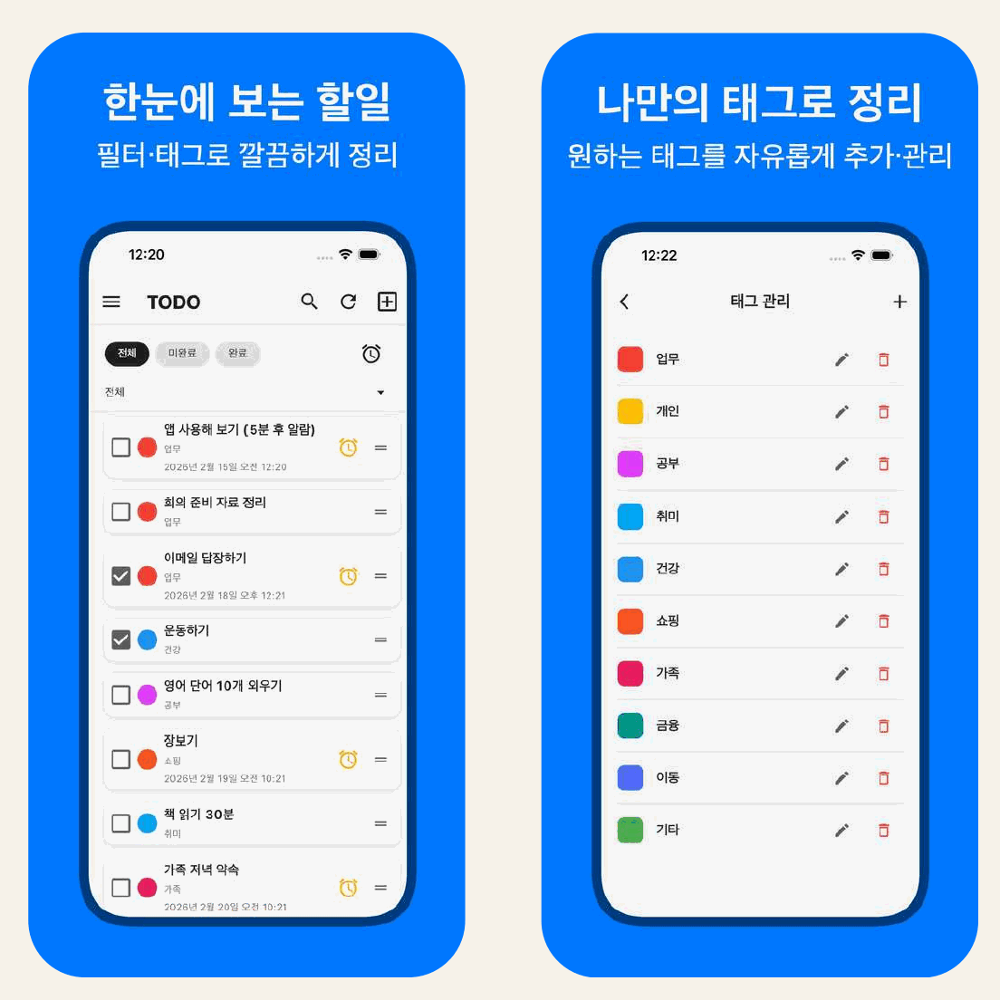
Flutter, 모바일 앱, AI/RAG
김택권
KIM TAEK KWON
Flutter 앱을 개발하고 출시, 운영했으며 FastAPI, ML, AI/RAG도 다루는 모바일 앱 개발자입니다.
총 개발 경력13년 4개월
마켓 출시, 운영앱 80여종
개인 앱 프로젝트Flutter 앱 4종
개발 프로젝트Flutter 게임 3종, 챗봇 앱 1종
Flutter Apps
기획부터 제작, 출시, 운영까지 맡은 앱
프로젝트별로 FastAPI 백엔드, 알림, 다국어, 실시간 동기화를 구현했습니다. 출시 상태는 각 카드에 표시했습니다.

GlucoInsight
성인 당뇨 위험도 참고 예측과 병원 찾기를 돕는 건강관리 앱입니다.
공공데이터 API와 지도 앱을 연동했습니다.
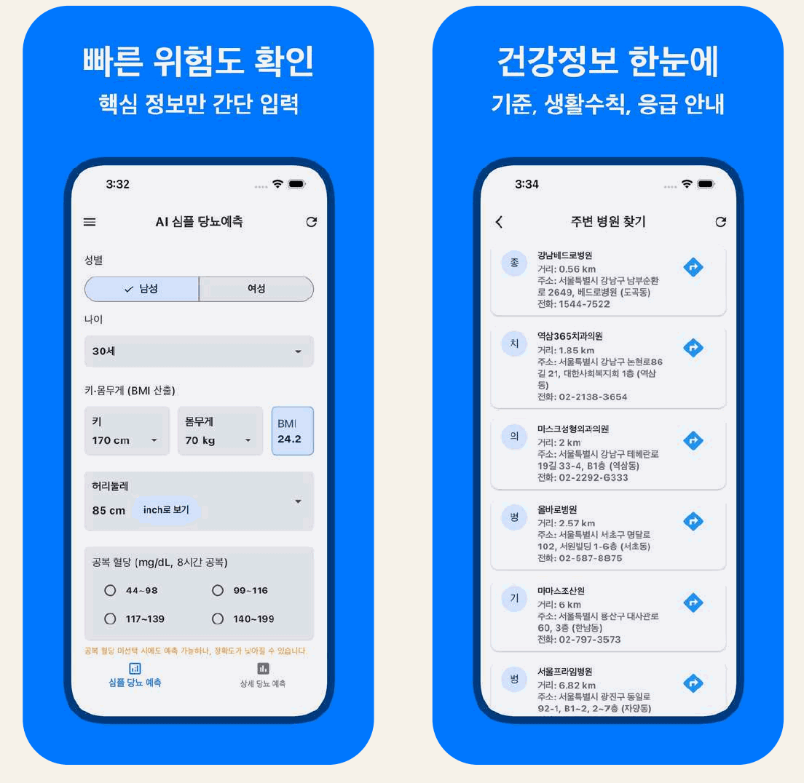

AI / RAG Project
관광 질문을 추천 카드로 바꾸는 챗봇
지역, 접근성, 제외 조건을 분석한 뒤 TourAPI 조회 결과를 저장 자료로 보완해 관광지 추천을 카드로 보여주는 무장애 관광 챗봇의 로컬 실행형 프로토타입입니다.

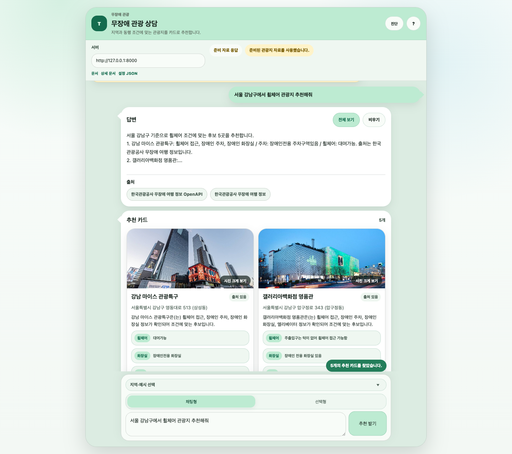
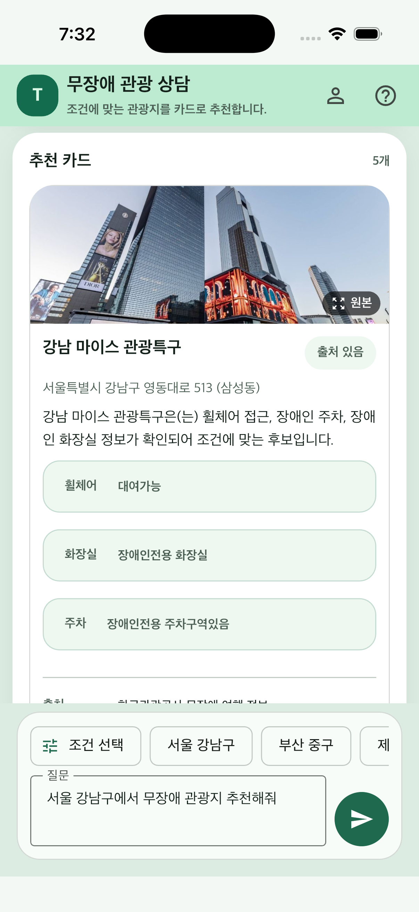
무장애 관광 챗봇
Flutter 앱과 FastAPI 백엔드를 연결해 관광 상담 화면을 만들었습니다.
- 질문 입력지역, 접근성 조건, 제외 조건을 분리
- TourAPI 확인응답이 있으면 최신 관광 데이터를 반영
- 저장 자료 검색ChromaDB와 Markdown 자료로 API 지연과 실패 보완
- 추천 카드 표시관광지 요약, 출처와 주의 문구 표시
Flutter / Flame
게임 프로젝트
Rummi Poker
Flutter/Flame으로 만든 보드형 덱빌딩 로그라이트 게임입니다. BIC에 출품하고 웹 빌드도 공개했습니다.

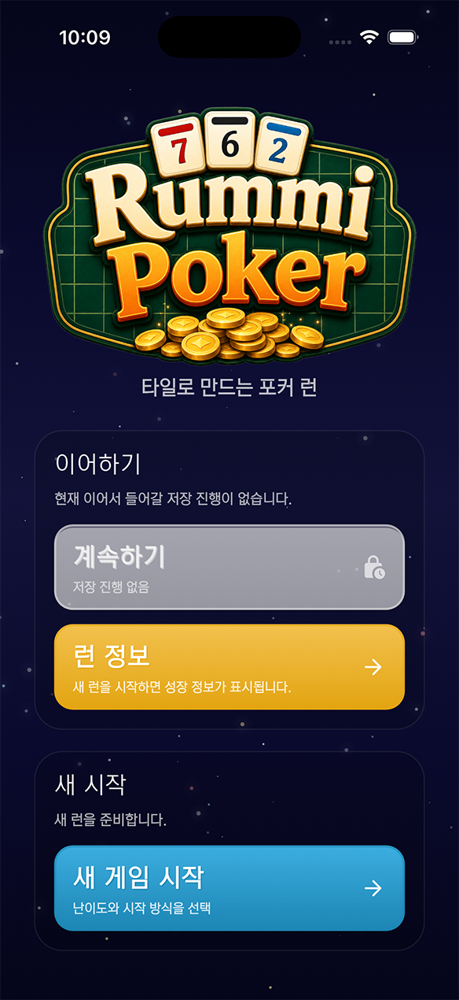
Stone Match
Flutter/Flame 기반 8×8 매치 3 퍼즐 게임입니다. 무한, 레벨, 타임 모드와 콤보, 특수 보석을 구현하고 PocketBase 랭킹과 Apps in Toss 광고를 연동했습니다.

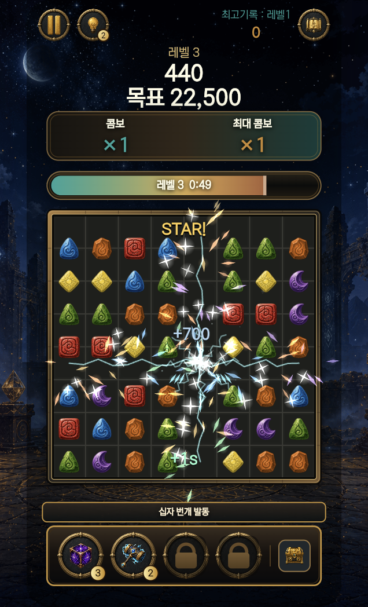
AI 활용 개발 환경GAME DEVELOPMENT
AI 에이전트로 구성한 개발, 검증, 배포 환경
에이전트 오케스트레이션부터 게임별 자동 플레이 검증 도구와 배포 스크립트까지 구축
에이전트 오케스트레이션
Codex가 작업을 조정하고, Claude가 기능 구현과 코드 검수를 나눠 수행
Codex 작업 조정
↓
Claude Sonnet 로그 기록
Claude Sonnet 시간 측정
↓
Claude Opus 게임 통합
↓
Claude Opus 별도 코드 검수
구현과 분리해 읽기 전용으로 코드 검수
자동 플레이 검증 도구 제작
Stone Match의 색 인식 봇과 Rummi Poker의 전투, 상점 진행을 검증하는 풀런봇 제작

Stone Match더미 화면
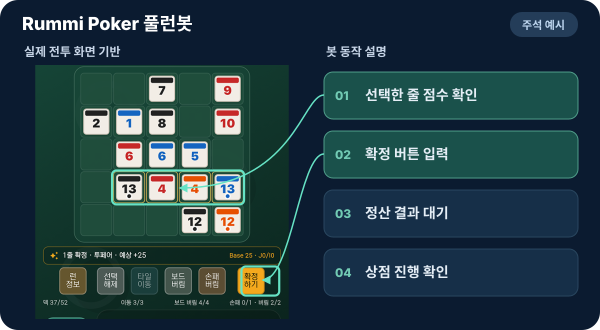
Rummi Poker설명용 주석
게임별 검증 도구와 검증 기록 보존
자동 배포 환경 구축
웹 빌드와 서버 업로드를 이어 실행하고, 배포 응답까지 확인하는 스크립트 구성
웹 릴리즈 빌드↓
소스맵 등록↓
NAS 업로드↓
배포 응답 확인↓
소스맵 등록 실패 시 중단, 배포 파일에서 소스맵 제외
자동 플레이 검증 도구 제작STONE MATCH / RUMMI POKER
두 게임의 자동 플레이 검증 도구 제작
게임의 입력 방식과 진행 구조에 맞춘 검증 도구를 AI와 함께 각각 제작
검증 과정을 설명하는 예시 화면
Stone Match
화면 픽셀의 색으로 보석을 구분해 교환할 곳을 찾고 실제 드래그와 종료 결과를 확인
Rummi Poker
타일 배치와 아이템 사용, 정산과 상점 선택을 이어가며 스테이지 진행 확인
Rummi Poker AI 활용 개발 사례RUMMI POKER
밸런스 시뮬레이터와 분석 도구 제작
AI를 활용해 게임 규칙을 조건별로 반복 실행하는 시뮬레이터와 결과를 한국어 문서로 정리하는 리포트 도구를 제작
게임 규칙과 카드 데이터
조건별 반복 실행
결과 저장과 집계
한국어 리포트 생성
설정할 수 있는 조건
- 난이도와 전투 구간
- 초기 카드와 아이템
- 플레이 정책, 반복 횟수, 시드
분석할 수 있는 항목
- 클리어율과 실패 유형
- 평균 턴
- 첫 득점과 마지막 득점, 조합별 집계
실제 코드 구성
- Dart 시뮬레이션 실행기
- Python 한국어 리포트 생성기
- 입력 거절, 같은 시드 재현, 집계 테스트
Rummi Poker 추가 AI 활용 사례RUMMI POKER
생성형 AI 카드 아트 제작 파이프라인
카드 데이터와 공통 아트 지침으로 이미지 생성 프롬프트를 만들고, 생성 결과를 작은 카드 화면에서 검토
카드 데이터
→
공통 아트 지침
→
카드별 프롬프트
→
이미지 일괄 생성
→
축소 미리보기


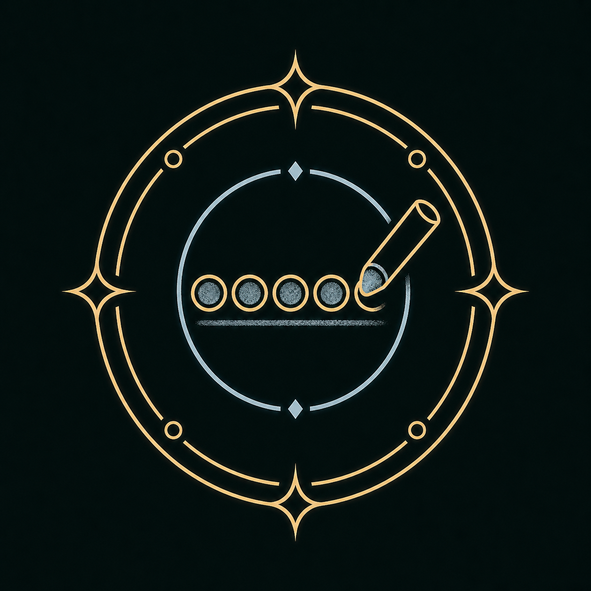


Tech Stack
프로젝트로 설명하는 기술 스택
Flutter App
Flutter, Riverpod, Hive, SQLite
모바일 앱 설계, 개발, 스토어 출시와 운영 경험Backend / API
FastAPI, REST, WebSocket, FCM
앱과 서버 연동, 실시간 동기화, 푸시 알림 적용 경험AI / ML / RAG
AI, ML, DL, 데이터 분석 교육 이수
RAG 기반 관광 챗봇과 ML 예측 보조 앱 개발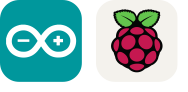
IoT / Hardware
Arduino, ESP32, Serial, MQTT-SSL
소프트웨어와 장치를 연결한 클라이언트 개발 경험Career
교육 콘텐츠와 모바일 앱 운영 경험
그로비교육
태블릿용 마이 슈퍼 브이, 슈퍼 브이 브레인, 예술 놀이터 등 유아 교육 콘텐츠 앱 개발과 라이브서비스 운영
천재교과서
개발 업무 프로세스 구축, 팀 빌딩, 계열사 교육용 모바일 앱 개발과 유지보수
천재교육
교육용 모바일 앱 개발, 마켓 업데이트 대응, AR Foundation과 OpenCV 기반 사진 인식 및 AR 서비스 제작
우주마켓
게임 개발팀 팀장, 우주좀비 Unity 2D 게임 제작과 라이브서비스
Unity Content
회사 프로젝트
그로비교육의 태블릿 콘텐츠와 천재교육과 천재교과서의 책, QR, AR, 블루투스 교보재 연동 앱을 제작했습니다.

마이 슈퍼 브이
캐릭터와 상호작용하며 기본 생활습관, 체험 학습, 미니 게임을 진행하는 육성형 앱입니다.
영상 보기
슈퍼 브이 브레인
기억력, 공간 지각력, 추리력, 시각 변별력, 문제 해결력, 수리력으로 구성된 두뇌 인지 앱입니다.
영상 보기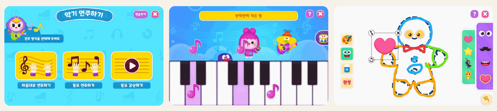
예술 놀이터
피아노, 드럼, 그림 그리기, 스티커 꾸미기 활동을 담은 예체능 앱입니다.

빅키즈 시리즈
영어, 한글, 수학 책과 연동한 영상, 노래, 게임 콘텐츠.
영상
돌잡이 시리즈
영어, 한글, 수학, 명화 책과 연동한 영상, 노래, 게임 콘텐츠.
영상
칠교탐험대
칠교 블록을 조립해 퍼즐을 완성하는 인터랙티브 게임 앱.
영상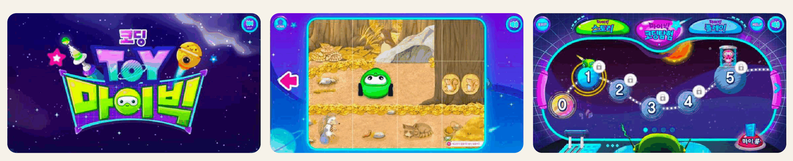
코딩토이 마이빅
블루투스 교보재 로봇과 앱을 연동한 코딩 교육 앱.
영상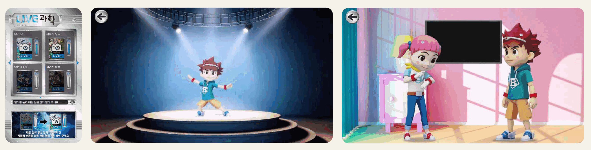
Live과학 시리즈
Live과학 전집과 연동한 영상, 게임 앱.
Google Play
Live한국사 시리즈
증강현실 카드를 찍어 AR 콘텐츠와 주제별 영상을 보는 앱.
Google PlayUnity 2D / Live Service
우주좀비
우주마켓, 2015.06 - 2015.12. Unity 2D 게임 제작과 라이브서비스를 담당했습니다.
생존형 좀비 게임의 클라이언트 개발과 운영
Unity 기반 2D 생존 서바이벌 게임으로, 제작부터 라이브서비스까지 맡았습니다.
- 우주마켓 게임 개발팀 팀장
- Unity 2D 게임 클라이언트 제작
- 출시 후 라이브서비스 운영
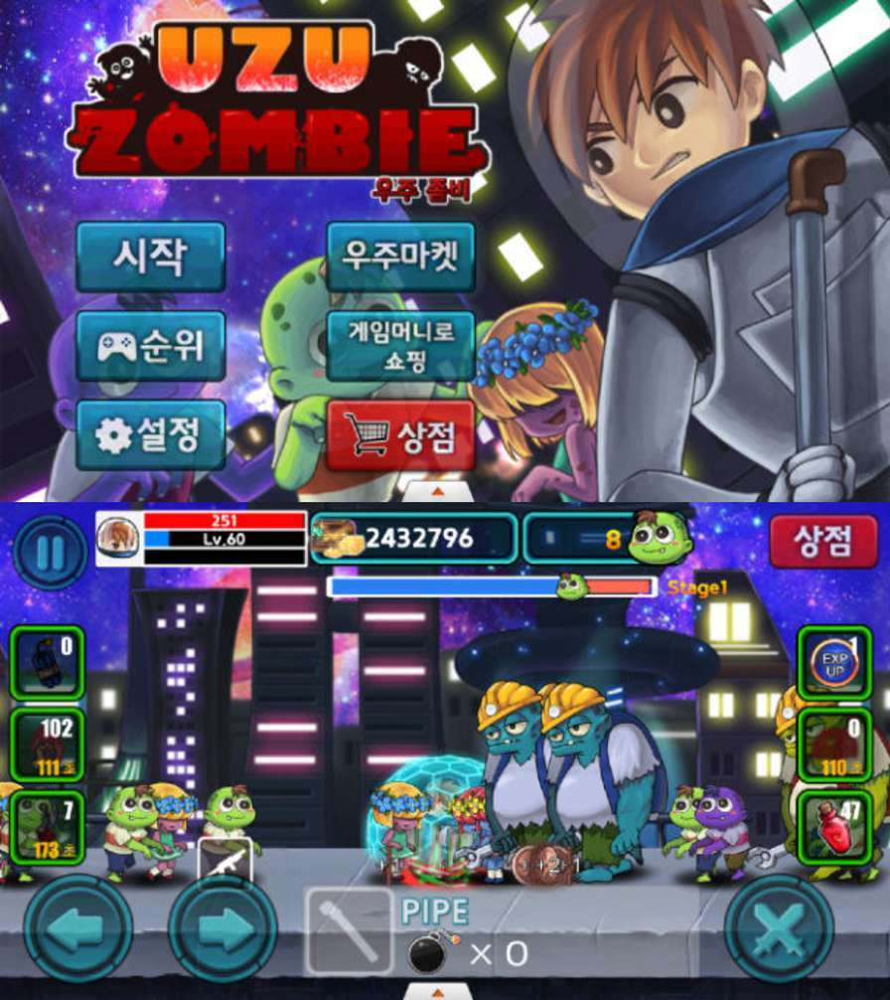
Hardware / IoT
하드웨어 연동
Archive / Links
이전 작업과 외부 링크
생명의 빛 - Touch 바이블 (Lua)
ATTACK "Z" (Lua)
Line Pang (Lua)
시공미디어 앱북 시리즈 (ActionScript)
시사붐붐잉글리쉬 앱북 시리즈 (ActionScript)
LG 스마트 TV: 시사 잉글리쉬 HB Kids 시리즈 (ActionScript)
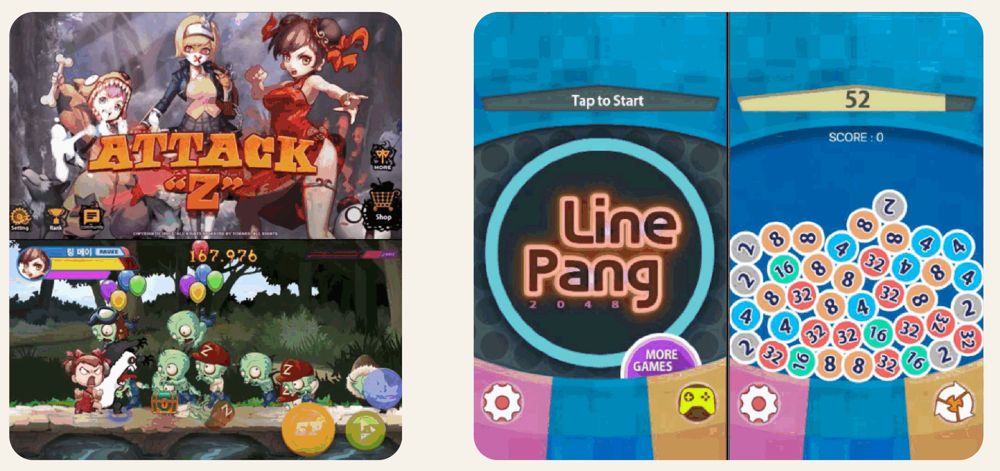